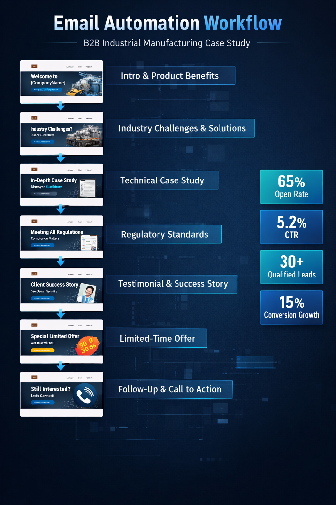

Sample Email Campaign
Industry Case Study Email
Subject Line: Improve Emission Control Efficiency in Cement Plants
CTA: Download Full Case Study

.png)
Email Marketing & Automation Strategist helping B2B businesses generate qualified leads through structured nurture sequences, behavioral segmentation, and performance-driven campaigns.
Results-driven email marketing specialist with experience in B2B industrial marketing. I design full-funnel automation workflows that move prospects from awareness to conversion using data-backed strategy and persuasive storytelling.
• Introductory Email – Product Overview
• Industry-Based Product Specifications
• Regulatory Norms & Technical Benefits
• Relevant Case Study
• Strategic Conclusion
• Response-Seeking Email
• Follow-Up Sequence
Subject Line: Improve Emission Control Efficiency in Cement Plants
CTA: Download Full Case Study
✔ 65% Average Open Rate
✔ 5.2% Click-Through Rate
✔ 30+ Qualified Leads Generated in 6 months
✔ 15% Increase in Conversion Rate
Challenge:
Low response rate from cold leads collected via market research and exhibitions.
Strategy:
Designed a 7-step email automation workflow including product education,
regulatory benefits, technical case study, and response-driven follow-up emails.
Execution:
• Segmented leads industry-wise
• Personalized subject lines
• Implemented structured CRM tracking
• Weekly performance analysis in Excel
Results:
✔ 65% Open Rate
✔ 5.2% CTR
✔ 30+ Qualified Leads Generated
✔ Improved follow-up efficiency by 40%
Tools Used:
Excel | Salesforce | Brevo | LinkedIn Sales Navigator
Challenge:
Exhibition leads and website inquiries were not converting into
qualified sales conversations.
Strategy:
Designed a 7-step segmented automation workflow including
product education, regulatory compliance insights,
industry-based specifications, and strong CTA follow-ups.
Execution:
• Industry-based segmentation
• CRM tracking & lead scoring
• Personalized subject lines
• Weekly performance optimization

Sample Automation Workflow:

Phone: +91 9146154482
Email: deepikakshirsagar85@gmail.com
LinkedIn: linkedin.com/in/deepsksh6111996/